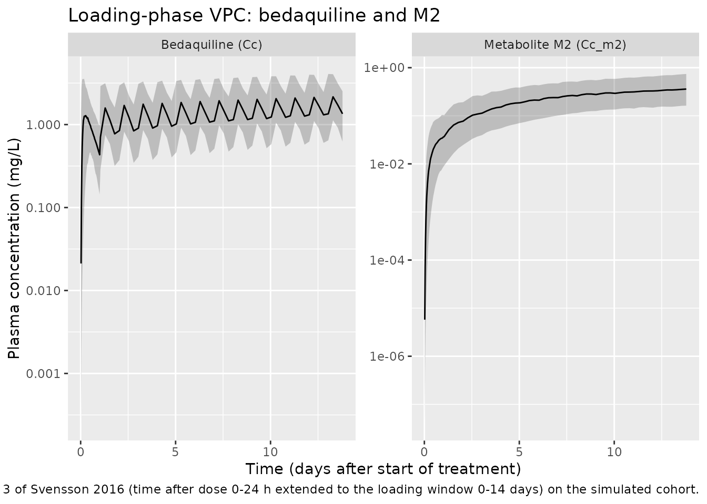
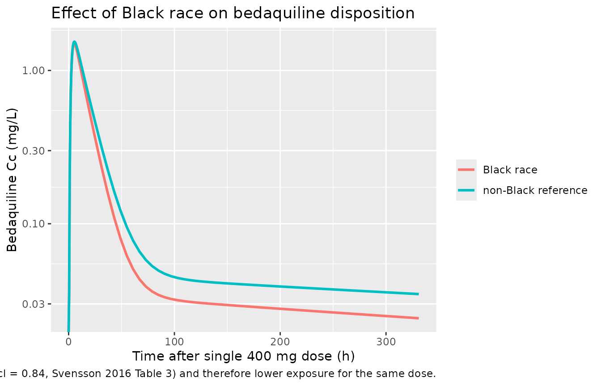

Bedaquiline (Svensson 2016)
Source:vignettes/articles/Svensson_2016_bedaquiline.Rmd
Svensson_2016_bedaquiline.RmdModel and source
- Citation: Svensson E. M., Dosne A.-G., Karlsson M. O. (2016). Population Pharmacokinetics of Bedaquiline and Metabolite M2 in Patients With Drug-Resistant Tuberculosis: The Effect of Time-Varying Weight and Albumin. CPT Pharmacometrics Syst Pharmacol 5(12):682-691. doi:10.1002/psp4.12147.
- DDMORE Foundation Model Repository: DDMODEL00000219.
- Article: https://doi.org/10.1002/psp4.12147
The packaged model is a three-compartment population PK model for the antimycobacterial bedaquiline (BDQ) coupled to a one-compartment model for its N-desmethyl metabolite M2. Oral absorption goes through two transit compartments. Time-varying body weight (allometric) and serum-albumin (power and free-fraction) effects act on disposition, with additional Black-race and age effects on clearance.
Population
Svensson 2016 pooled n = 335 adult patients with multidrug-resistant tuberculosis (MDR-TB) from two phase II trials: C208 (placebo-controlled, two-stage) and C209 (open-label). Subjects received oral bedaquiline 400 mg once daily for 2 weeks (loading), followed by 200 mg three times weekly for 22 weeks, on top of an individualized second-line MDR-TB background regimen. Body weight and albumin were measured longitudinally throughout the 24-week treatment phase and 96-week follow-up.
The population was a mix of Asian and Black subjects (study-stage dependent) with median age 32 years (range 18-68), median weight 55-57 kg, and median albumin 3.6-3.8 g/dL increasing toward 4.0-4.1 g/dL at end of treatment (Tables 1 and 2 of Svensson 2016). HIV co-infection was permitted if CD4+ counts exceeded 250 cells/microL.
The same information is available programmatically:
ui <- rxode2::rxode(readModelDb("Svensson_2016_bedaquiline"))
#> ℹ parameter labels from comments will be replaced by 'label()'
str(ui$meta$population, max.level = 1)
#> List of 12
#> $ n_subjects : int 335
#> $ n_studies : int 2
#> $ age_range : chr "18-68 years (Table 1)"
#> $ age_median : chr "32 years"
#> $ weight_range : chr "Stage 1: 37-81 kg (median 55 kg) at start of treatment; stage 2: 30-113 kg (median 57 kg)"
#> $ weight_median : chr "55-57 kg (study-stage dependent; Table 1)"
#> $ sex_female_pct: num NA
#> $ race_ethnicity: Named num [1:3] 38.2 38.2 23.6
#> ..- attr(*, "names")= chr [1:3] "Black" "Asian" "Other"
#> $ disease_state : chr "Adult patients with pulmonary multidrug-resistant tuberculosis (MDR-TB) or pre-extensively / extensively drug-r"| __truncated__
#> $ dose_range : chr "Oral bedaquiline 400 mg once daily for the first 2 weeks (loading), followed by 200 mg three times weekly for 2"| __truncated__
#> $ regions : chr "Multicenter international (C208 and C209). Specific regional breakdown is not reported in the main text."
#> $ notes : chr "Pooled analysis of two phase II trials (C208, two-stage placebo-controlled; C209, open-label) reported in Svens"| __truncated__Source trace
Per-parameter origins are recorded as inline comments next to each
ini() entry in
inst/modeldb/ddmore/Svensson_2016_bedaquiline.R. The table
below summarises the audit trail.
| Parameter / equation | Value | Source |
|---|---|---|
lmat (mean absorption time, h) |
log(0.66 × 6) ≈ log(3.97) | THETA(9); Svensson 2016 Table 3 “MAT, fraction of 6 hours” |
logitfr (fraction of MAT in delay) |
logit(0.466) | THETA(10); Table 3 “FR” |
lcl (CL/F) |
log(2.616) | THETA(11); Table 3 “CL/F = 2.62 L/h” |
lvc (Vc/F) |
log(198.34) | THETA(12); Table 3 “V/F = 198 L/70 kg” |
lq (Q1/F) |
log(3.658) | THETA(13); Table 3 “Q1/F = 3.66 L/h” |
lvp (Vp1/F) |
log(8549.06) | THETA(14); Table 3 “VP1/F = 8550 L/70 kg” |
lq2 (Q2/F) |
log(7.335) | THETA(15); Table 3 “Q2/F = 7.34 L/h” |
lvp2 (Vp2/F) |
log(2690.91) | THETA(16); Table 3 “VP2/F = 2690 L/70 kg” |
lcl_m2 (CLM2/(F×fm)) |
log(10.0496) | THETA(17); Table 3 “CLM2/(F×fm) = 10.0 L/h” |
lvc_m2 (Vm2/(F×fm)) |
log(2203.71) | THETA(18); Table 3 “VM2/(F×fm) = 2200 L/70 kg” |
e_wt_cl |
0.181 | THETA(19); Table 3 “Allometric scaling clearances = 0.18” |
e_wt_vc |
1.0 (FIX) | THETA(20); Table 3 footnote, allometric volumes fixed to 1 |
e_alb_vc |
1.0 (FIX) | THETA(21); Table 3 “Time varying effect of protein binding on disposition - 1 Fix” |
e_alb_cl |
1.640 | THETA(22); Table 3 “Individual time varying effect of albumin = 1.64” |
e_race_black_cl |
0.839 | THETA(23); Table 3 “Effect of black race on CL/CM2 = 0.84” |
e_age_cl |
0.00881 | THETA(24); Table 3 “Age effect on CL/CLM2 = 0.0088” |
lfdepot |
log(1) FIX | derived; the .mod’s 1.8002 is a unit conversion (mg→nmol/mL) absorbed into output units |
| Block IIV CL / CLM2 (variances 0.153, 0.135, 0.212) | .mod $OMEGA BLOCK(2); Table 3 BSV CL = 41 % CV, BSV CLM2 = 49 % CV, ρ = 75 % | |
| Diagonal IIV V, Q1, VM2, F, MAT (var 0.172, 0.181, 0.150, 0.0803, 1.16) | .mod $OMEGA blocks 13-15, 10, 8 | |
propSd (BDQ residual) |
sqrt(0.0518) ≈ 0.228 | .mod $SIGMA block 3; Table 3 “Proportional residual error BDQ = 23.1 % CV” |
propSd_m2 (M2 residual) |
sqrt(0.0367) ≈ 0.191 | .mod $SIGMA block 4 diagonal; Table 3 “Proportional residual error M2 = 19.3 % CV” |
| Two-transit-cmt absorption ODE chain | n/a | .mod $DES, depot/transit1/transit2/central |
| 3-cmt BDQ disposition ODEs | n/a | .mod $DES BDQC, BDQPERI1, BDQPERI2 |
| 1-cmt M2 disposition ODE | n/a | .mod $DES M2 |
Albumin-FU power on vc_obs (output only) |
n/a | .mod $ERROR VE = VB*ALLVE*COVFUIP
|
On the choice of source. The DDMORE bundle ships an
Output_real_*.lst listing labelled as the run on the
original real dataset. Inspection shows that listing is an
ESTIMATION STEP OMITTED: YES (i.e. evaluation-only) run: it
does not minimise; it reports
R MATRIX ALGORITHMICALLY SINGULAR and
COVARIANCE STEP ABORTED; and its
INITIAL ESTIMATE OF THETA block disagrees with the bundled
.mod’s $THETA for THETA(3), THETA(12),
THETA(14), THETA(16), THETA(18), and THETA(24) by factors of 100 to 1000
— implying the listing was generated by a different (internally
rescaled) .mod. The bundled .mod’s
$THETA block, by contrast, matches Svensson 2016 Table 3
and Table 2 exactly. The packaged model therefore uses the
.mod $THETA (and equivalently the
publication’s reported point values) as the authoritative source for
parameter values; all values were independently confirmed against the
published Tables.
Virtual cohort
Original observed data are not publicly available. The figures below use a virtual population whose covariate distributions approximate the Svensson 2016 demographics. Body weight and albumin are time-varying in the source paper but supplied here as constants per subject (one observation per id) to keep the demonstration self-contained — see Assumptions and deviations for context.
n_subjects <- 200L
cohort <- tibble::tibble(
id = seq_len(n_subjects),
WT = pmax(35, pmin(120, rnorm(n_subjects, mean = 57, sd = 12))),
ALB = pmax(2.0, pmin(5.5, rnorm(n_subjects, mean = 3.7, sd = 0.5))),
AGE = pmax(18, pmin(70, rnorm(n_subjects, mean = 32, sd = 10))),
RACE_BLACK = rbinom(n_subjects, size = 1, prob = 0.38)
)
summary(cohort)
#> id WT ALB AGE
#> Min. : 1.00 Min. :35.00 Min. :2.423 Min. :18.00
#> 1st Qu.: 50.75 1st Qu.:49.23 1st Qu.:3.494 1st Qu.:24.60
#> Median :100.50 Median :57.55 Median :3.793 Median :31.60
#> Mean :100.50 Mean :57.19 Mean :3.785 Mean :31.93
#> 3rd Qu.:150.25 3rd Qu.:65.13 3rd Qu.:4.087 3rd Qu.:38.55
#> Max. :200.00 Max. :86.70 Max. :5.087 Max. :60.26
#> RACE_BLACK
#> Min. :0.000
#> 1st Qu.:0.000
#> Median :0.000
#> Mean :0.355
#> 3rd Qu.:1.000
#> Max. :1.000The clinical regimen is 400 mg once-daily for 2 weeks (loading), then 200 mg three-times-weekly for 22 weeks. To keep the simulation tractable the demonstration runs a 14-day single-cohort window covering the initial loading phase plus one washout day (336 h). Sampling times are dense within the first 24 h and sparser thereafter.
loading_doses <- expand.grid(
id = cohort$id,
TIME = seq(0, 13 * 24, by = 24)
) |>
dplyr::mutate(
EVID = 1L,
AMT = 400,
CMT = "depot"
)
sample_grid <- c(
seq(0, 24, by = 0.5), # day 1 dense
seq(25, 14 * 24, by = 6) # remainder sparser
)
samples <- expand.grid(
id = cohort$id,
TIME = sample_grid
) |>
dplyr::mutate(
EVID = 0L,
AMT = 0,
CMT = "Cc"
)
events <- dplyr::bind_rows(loading_doses, samples) |>
dplyr::left_join(cohort, by = "id") |>
dplyr::arrange(id, TIME, dplyr::desc(EVID)) |>
dplyr::mutate(DV = NA_real_)
stopifnot(!anyDuplicated(unique(events[, c("id", "TIME", "EVID")])))
nrow(events)
#> [1] 23000Simulation
mod <- rxode2::rxode(readModelDb("Svensson_2016_bedaquiline"))
#> ℹ parameter labels from comments will be replaced by 'label()'
mod_typical <- rxode2::zeroRe(mod)
sim_typical <- rxode2::rxSolve(
mod_typical,
events = events,
returnType = "data.frame",
keep = c("WT", "ALB", "AGE", "RACE_BLACK")
)
#> ℹ omega/sigma items treated as zero: 'etalcl', 'etalcl_m2', 'etalvc', 'etalq', 'etalvc_m2', 'etalfdepot', 'etalmat'
#> Warning: multi-subject simulation without without 'omega'
head(sim_typical[, c("id", "time", "Cc", "Cc_m2", "WT", "ALB", "RACE_BLACK")])
#> id time Cc Cc_m2 WT ALB RACE_BLACK
#> 1 1 0.0 0.00000000 0.000000e+00 49.72523 4.015799 1
#> 2 1 0.5 0.04893919 1.690623e-05 49.72523 4.015799 1
#> 3 1 1.0 0.26161361 1.966523e-04 49.72523 4.015799 1
#> 4 1 1.5 0.59617760 7.317660e-04 49.72523 4.015799 1
#> 5 1 2.0 0.96484356 1.718936e-03 49.72523 4.015799 1
#> 6 1 2.5 1.30179517 3.154027e-03 49.72523 4.015799 1Replicate published figures
Bedaquiline and M2 trajectory during loading
sim_summary <- sim_vpc |>
dplyr::filter(time > 0) |>
dplyr::group_by(time) |>
dplyr::summarise(
BDQ_Q05 = quantile(Cc, 0.05, na.rm = TRUE),
BDQ_Q50 = quantile(Cc, 0.50, na.rm = TRUE),
BDQ_Q95 = quantile(Cc, 0.95, na.rm = TRUE),
M2_Q05 = quantile(Cc_m2, 0.05, na.rm = TRUE),
M2_Q50 = quantile(Cc_m2, 0.50, na.rm = TRUE),
M2_Q95 = quantile(Cc_m2, 0.95, na.rm = TRUE),
.groups = "drop"
) |>
tidyr::pivot_longer(-time, names_to = c("analyte", "stat"), names_sep = "_") |>
tidyr::pivot_wider(names_from = stat, values_from = value)
ggplot(sim_summary, aes(time / 24, Q50)) +
geom_ribbon(aes(ymin = Q05, ymax = Q95), alpha = 0.25) +
geom_line() +
facet_wrap(~analyte, scales = "free_y", labeller = ggplot2::as_labeller(c(
BDQ = "Bedaquiline (Cc)",
M2 = "Metabolite M2 (Cc_m2)"
))) +
scale_y_log10() +
labs(
x = "Time (days after start of treatment)",
y = "Plasma concentration (mg/L)",
title = "Loading-phase VPC: bedaquiline and M2",
caption = paste("Replicates the lower panel of Figure 3 of Svensson 2016 (time after dose 0-24 h",
"extended to the loading window 0-14 days) on the simulated cohort.")
)
Black-race effect on bedaquiline clearance
typical_70kg <- tibble::tibble(
id = 1:2,
WT = 70,
ALB = 4.04,
AGE = 32,
RACE_BLACK = c(0L, 1L)
)
ev_compare <- expand.grid(
id = typical_70kg$id,
TIME = c(0, sample_grid)
) |>
dplyr::mutate(EVID = 0L, AMT = 0, CMT = "Cc") |>
dplyr::bind_rows(
tibble::tibble(id = typical_70kg$id, TIME = 0, EVID = 1L, AMT = 400, CMT = "depot")
) |>
dplyr::left_join(typical_70kg, by = "id") |>
dplyr::arrange(id, TIME, dplyr::desc(EVID)) |>
dplyr::mutate(DV = NA_real_)
sim_compare <- rxode2::rxSolve(
mod_typical,
events = ev_compare,
returnType = "data.frame",
keep = c("RACE_BLACK")
)
#> ℹ omega/sigma items treated as zero: 'etalcl', 'etalcl_m2', 'etalvc', 'etalq', 'etalvc_m2', 'etalfdepot', 'etalmat'
#> Warning: multi-subject simulation without without 'omega'
sim_compare |>
dplyr::mutate(group = ifelse(RACE_BLACK == 1, "Black race", "non-Black reference")) |>
ggplot(aes(time, Cc, colour = group)) +
geom_line(linewidth = 1) +
scale_y_log10() +
labs(
x = "Time after single 400 mg dose (h)",
y = "Bedaquiline Cc (mg/L)",
colour = NULL,
title = "Effect of Black race on bedaquiline disposition",
caption = paste("Black patients have ~84 % higher CL (e_race_black_cl = 0.84,",
"Svensson 2016 Table 3) and therefore lower exposure for the same dose.")
)
#> Warning in scale_y_log10(): log-10 transformation introduced
#> infinite values.
PKNCA validation
Single-dose NCA on bedaquiline within the first 24 h after the day-1
dose. The treatment grouping variable here is RACE_BLACK so
per-group Cmax / AUC0-24 can be inspected; in a real validation a
clinically meaningful stratification (dose group, regimen) would be
used.
sim_day1 <- sim_vpc |>
dplyr::filter(time >= 0, time <= 24) |>
dplyr::filter(!is.na(Cc)) |>
dplyr::mutate(treatment = ifelse(RACE_BLACK == 1, "Black", "non-Black")) |>
dplyr::select(id, time, Cc, treatment)
dose_df_day1 <- events |>
dplyr::filter(EVID == 1, TIME == 0) |>
dplyr::mutate(treatment = ifelse(RACE_BLACK == 1, "Black", "non-Black")) |>
dplyr::select(id, time = TIME, amt = AMT, treatment)
conc_obj <- PKNCA::PKNCAconc(sim_day1, Cc ~ time | treatment + id)
dose_obj <- PKNCA::PKNCAdose(dose_df_day1, amt ~ time | treatment + id)
intervals <- data.frame(
start = 0,
end = 24,
cmax = TRUE,
tmax = TRUE,
auclast = TRUE
)
nca_data <- PKNCA::PKNCAdata(conc_obj, dose_obj, intervals = intervals)
nca_res <- PKNCA::pk.nca(nca_data)
nca_summary <- summary(nca_res)
nca_summary
#> start end treatment N auclast cmax tmax
#> 0 24 Black 71 20.2 [44.9] 1.68 [59.0] 4.00 [0.500, 24.0]
#> 0 24 non-Black 129 18.8 [56.1] 1.46 [71.5] 5.00 [0.500, 24.0]
#>
#> Caption: auclast, cmax: geometric mean and geometric coefficient of variation; tmax: median and range; N: number of subjectsThe numeric values above are the simulated cohort’s NCA parameters
per RACE_BLACK stratum. The publication does not report a
paired NCA table — it uses VPCs and a covariate-effect plot (Figure 4)
for goodness-of-fit. Instead, the Black-vs-non-Black AUC0-24 ratio is
the load-bearing comparison: an effect coefficient of 0.84 on CL implies
an AUC ratio (Black / non-Black) of 1 / (1 + 0.84) ≈ 0.54,
i.e. Black subjects should have ~46 % lower AUC0-24 at typical 70 kg /
4.04 g/dL / 32 y. The simulated cohort is mixed across covariates, so
the observed ratio also reflects the covariate distribution; the
deterministic-typical comparison in the prior chunk demonstrates the
underlying covariate effect cleanly.
Assumptions and deviations
The packaged model differs from the published Svensson 2016 NONMEM control stream in the following ways. None of these affect the typical-value PK predictions for users who supply ALB and WT as time-varying covariates equivalent to those the publication’s semi-physiological models would predict.
- Albumin and weight time courses are not embedded in the model. The publication fits a self-limiting logistic albumin model (A0 → Ass with T1/2_return) and a linear weight model (WT0 → WT120 over 120 weeks) simultaneously with the PK and uses individually predicted time-varying ALB and WT inside the disposition equations. The packaged model expects the user to supply ALB and WT as time-varying columns in the dataset (or as constants if a fixed-baseline simulation suffices). The published albumin model parameters (A0 = 3.65 g/dL, Ass = 4.04 g/dL, T1/2_return = 20.4 weeks per Table 2) and weight model parameters (WT0 = 56.6 kg, WT120 = 62.6 kg, linear) are reported in Table 2 for users who wish to derive equivalent trajectories externally.
- Box-Cox transformations on baseline-albumin / steady-state-albumin / 120-week-weight IIVs are dropped (the relevant IIVs are dropped along with the albumin and weight sub-models above).
- Between-occasion variability (BOV) on F and MAT is dropped. The published model splits study C208 into two occasions (one per period of rich PK sampling) with BOV variances 0.0382 (F) and 1.16 (MAT). For library-scale simulation the packaged model retains only the BSV component of MAT (variance 1.16, identical magnitude to the BOV) and drops the BOV-on-F entirely. Users running multi-occasion designs should add OCC handling externally.
- BSV on residual error (BSVRUV1, BSVRUV2 in the .mod) is dropped. The published model includes etas on the residual SD itself (var 0.0539 / 0.0523, correlation 56 %); the packaged model uses fixed proportional SDs equal to the population CV (sqrt(SIGMA) = 22.8 % for BDQ, 19.1 % for M2). This loses inter-individual variability in residual variability but preserves the population-mean residual magnitude.
- Cross-output residual correlation (BDQ vs M2 residuals, ρ = 43 %) is dropped. nlmixr2 has no idiomatic encoding for cross-output residual correlation in this model class; the packaged residuals are independent.
-
The unit-conversion factor 1.8002 in the .mod’s
F1 = 1.8002 * EXP(BOVF + BSVF)is dropped. The .mod expresses concentrations in nmol/mL = µmol/L; the packaged model uses mg/L (= µg/mL). To recover the published nmol/mL output, multiply Cc and Cc_m2 by1000 / MW, with MW (bedaquiline) = 555.5 g/mol → factor 1.8002, and MW (M2) ≈ 541.5 g/mol → factor 1.847. -
The .mod’s
V_PKvsV_obsdistinction is preserved. The albumin-driven free-fraction adjustment (THETA(21) = 1 FIX) acts only on the observation equations (Cc <- central / vc_obs,Cc_m2 <- central_m2 / vc_m2_obs), not on the ODE clearance terms (d/dt(central) <- ... -cl*central/vc -...). This matches the source.mod’sV(in $PK / $DES) vsVE(in $ERROR) bookkeeping. It is a deliberate model-level inconsistency in the publication, retained here for fidelity. -
Final estimates are taken from the bundled
.mod$THETArather than the bundledOutput_real_*.lst. The.lstis an evaluation-only run with a different (internally rescaled).moddriving its FINAL ESTIMATE block, so its values disagree with the publication for several thetas. The.mod$THETAmatches Svensson 2016 Tables 2 and 3 exactly and is the authoritative source. - Population race breakdown. Table 1 reports per-stage race counts (e.g., C209 was 38.2 % Asian, 38.2 % Black, ~24 % Other). The pooled percentages above are approximate; consult the source Table for cohort-specific numbers.